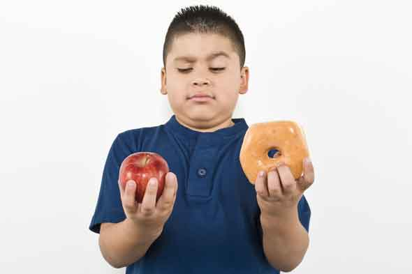
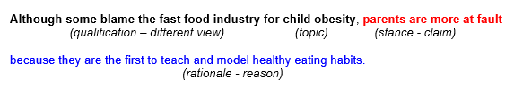

Introduction
Unit 3
Learning outcomes
By the end of this unit you should:
- have considered the subsections to include in your introduction
- be able to create a thesis outline
- know how to generate a thesis statement
- understand the importance of beginning writing now
Introduction section
Activity 1
Read this text below. Decide which of the subsections are suitable for your graduation thesis.
Simply put, the purpose of the introduction is to create interest in your study. There are many types of information that could be included. The list below includes 11 types of information. However, you should not use all of them. One way to identify which types of information should be included is to refer to graduation theses of other members of your lab. If possible, discuss the possible contents of your introduction with your graduation thesis supervisor.
- Give background information about the topic.
- Refer to the important findings of other researchers.
- Identify the need for further investigation.
- Indicate your plans for further investigation.
- State your hypothesis/research questions.
- State your aim/purpose.
- State your objectives.
- Indicate the scope of your study, i.e. the width versus the depth of your research.
- Refer to any limitations of your study.
- Give a definition of key terms.
- Outline the content of each section.
Source: Final Year Project guidelines at the Hong Kong Polytechnic University
Thesis outline
Activity 2
Read this section carefully so that you can answer any questions set by your professor.
The most basic outline for a graduation thesis is IBC:
- introduction,
- body,
- conclusion.
- introduction,
- method
- results,
- discussion,
- conclusion.
- front matter,
- abstract,
- introduction,
- method,
- results,
- discussion,
- conclusion,
- references.
Activity 3
Work in pairs or threes. Take it in turn to ask and answer the following questions.
- How many words have your written so far?
- When do you plan to write your thesis?
- What will you do if you get ill then?
- Will you write your thesis in Japanese first?
- Will you translate sentences with Google translate?
- When will you write the introduction?
- When will you write the method?
- When will you write the results?
- When will you write the discussion?
- When will you create the tables and figures?
- Will you use LaTeX? If so, do you know how?
Activity 4
Decide which of the following sections you can write now (at least the first draft).
| General headings | Indicative content | Can you write this now? |
|---|---|---|
| Front matter | title, author, contact details, supervisor | |
| Abstract | abstract, keywords | |
| Introduction | background, thesis statement, aim, hypothesis, research questions, overview | |
| Method | data identification, data collection, statistical analysis | |
| Results | key data, tables, figures, summary | |
| Discussion | comparisons, contrasts, explanations, generalizations | |
| Conclusion | summary, conclusion, further work | |
| References | list of cited works |
Thesis statement
Activity 5
Read this section carefully so that you can answer any questions set by your professor.
The word thesis roughly translates from the Greek word for position. The thesis statement is a refined and succinct set of arguments that define what you will demonstrate or prove in the thesis—it is your position. It is the point of your work. The statement can be very short or many pages in length. If an oral defense were a battle, this is the ground you fight to hold.
[Source: Ryerson University guide on How to Produce a Computer Science Thesis]
Your thesis statement will probably change during your research, but it is important to try to summarize the arguments that support or underlie your position.
One way to generate a thesis statement is to state the topic, your stance, the rationale for this stance and note any qualifications. Put simply, state your claim or position, the reason for deciding this. Note also any different views and any limitations. The example below shows how the answers to four questions can be combined into a one-sentence thesis statement (thesis sentence).
| Question | Answer | |
|---|---|---|
| Topic | What is your topic? | My topic is child obesity. |
| Stance | What is your position or claim? | My claim is that parents should teach their children healthy eating habits. |
| Rationale | Why do you think so? | I think so because parents are the first to teach and model healthy eating habits. |
| Qualification | Is there a different view? Are there any limitations? | Some people blame the fast food industry for child obesity. |

[Adapted from: Academic Help]
Activity 6
Watch this video to understand the difference between thesis statements (thesis sentence) and topic sentences.
Activity 7
Answer these questions in Japanese or English.
| Question | Your answer |
|---|---|
| What is your topic? | |
| What is your position or claim? | |
| Why do you think so? |
|
| Is there a different view? Are there any limitations? |
If you wrote in Japanese, use Google Translate to translate your answers into English. Remember these tips.
- Write short clear expressions or sentences.
- State the grammatical subject.
- Avoid using linking words.
- Link the machine-translated expressions or sentences together yourself.
Remember statistical machine translation works best for short highly frequent sentences, and the chance for accurate Japanesese-English translations for the contents of your graduation thesis is low (as of October, 2018). Do not rely on Google Translate, but use it as a tool in the same way as a dictionary or grammar book.
Unit review
Answer these questions.
- How many words will you write for your graduation thesis this week?
- What is a thesis outline?
- What is a thesis statement?
- What will you write this week?
Find the answers to any questions that you could not answer. In some cases, you need to decide!
Motivate me
Create a writing routine. Write a little, each day. Keep a progress record, e.g. Monday 20 words, Tuesday 30 words, Wednesday 10 words. Try to write at least some words every day. Write in English or Japanese, but write.